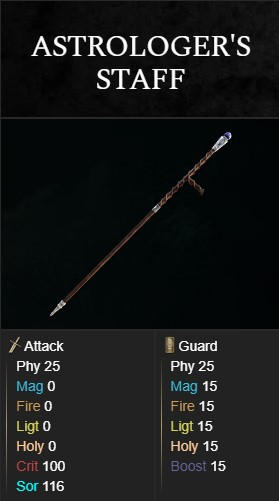

MoonLight (Arma Definitiva)
Descrição da arma aqui. Detalhes sobre suas habilidades, uso e outras informações relevantes.
-Wiki do Item-Cajado da Renalla (Arma Definitiva)
Descrição da arma aqui. Detalhes sobre suas habilidades, uso e outras informações relevantes.
-Wiki do Item-

Cajado do Astrologo(Arma inicial)
Descrição da arma aqui. Detalhes sobre suas habilidades, uso e outras informações relevantes.
-Wiki do Item-